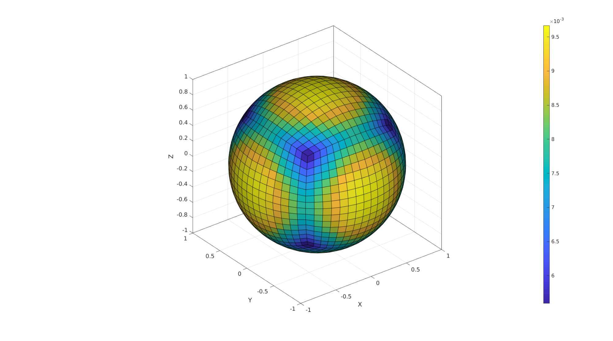

patchArea
Below is a demonstration of the features of the patchArea function
Contents
clear; close all; clc;
Syntax
[A]=patchArea(F,V);
Description
The patchArea function computes the surface area of the patch elements defined by the faces F and vertices V.
Examples
testCase=5; switch testCase case 1 %Circle r=1; n=250; t=linspace(-pi,pi,n)'; t=t(1:end-1); V=[r*cos(t) r*sin(t) zeros(size(t))]; F=[1:size(V,1)]; aTotalTrue=pi*r^2 %True theoretical area case 2 %Single element square 1x1 V=[0 0 0; 1 0 0; 0 1 0; 1 1 0]; F=[1 2 4 3]; aTotalTrue=1 %True theoretical area case 3 %Multi element square rotated 1x1 V1=0.5*[-1 -1; -1 1; 1 1; 1 -1]; regionCell={V1}; %A region between V1 and V2 (V2 forms a hole inside V1) plotOn=0; %This turns on/off plotting pointSpacing=0.1; %Desired point spacing resampleCurveOpt=1; %Option to turn on/off resampling of input boundary curves [F,V]=regionTriMesh2D(regionCell,pointSpacing,resampleCurveOpt,plotOn); V(:,3)=0; aTotalTrue=1 %True theoretical area R=euler2DCM([-0.25*pi 0.25*pi 0]); V=V*R; case 4 %Cube [V,F]=platonic_solid(2); V=V./max(V(:))/2; aTotalTrue=6 %True theoretical area case 5 %Sphere quads r=1; n=4; % [F,V]=geoSphere(n,r); [F,V]=quadSphere(n,r,2); aTotalTrue=4*pi*r^2 %True theoretical area case 6 %Sphere triangles r=1; n=4; [F,V]=geoSphere(n,r); aTotalTrue=4*pi*r^2 %True theoretical area end
aTotalTrue = 12.5664
%Compute areas for each patch/face [A]=patchArea(F,V); %Checking sum with theoretical (not changes due to discrete nature are %possible). aTotalEstimate=sum(A(:)) %Summed area check
aTotalEstimate = 12.5400
Visualization
cFigure; gpatch(F,V,A); axisGeom; camlight headlight; colormap parula; colorbar; gdrawnow;

GIBBON www.gibboncode.org
Kevin Mattheus Moerman, gibbon.toolbox@gmail.com
GIBBON footer text
License: https://github.com/gibbonCode/GIBBON/blob/master/LICENSE
GIBBON: The Geometry and Image-based Bioengineering add-On. A toolbox for image segmentation, image-based modeling, meshing, and finite element analysis.
Copyright (C) 2006-2021 Kevin Mattheus Moerman and the GIBBON contributors
This program is free software: you can redistribute it and/or modify it under the terms of the GNU General Public License as published by the Free Software Foundation, either version 3 of the License, or (at your option) any later version.
This program is distributed in the hope that it will be useful, but WITHOUT ANY WARRANTY; without even the implied warranty of MERCHANTABILITY or FITNESS FOR A PARTICULAR PURPOSE. See the GNU General Public License for more details.
You should have received a copy of the GNU General Public License along with this program. If not, see http://www.gnu.org/licenses/.